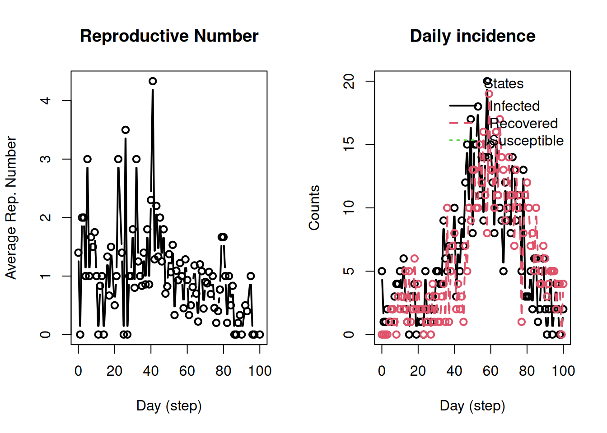

epiworld is an advanced, highly flexible and performant Agent-Based Modeling (ABM) engine with a focus on epidemiological models. The core of the tool has been implemented in C++–available at https://github.com/UofUEpiBio/epiworld–and it has R and Python wrappers.
Architecture
Althought epiworld contains a large number of modules and moving parts, the most important ones are the Model, DataBase, Queue, Event, Agent, Virus, Tool, and Entity.
flowchart TD
subgraph SE[Simulation Engine]
M[Model]
D[DataBase]
Q[Queue]
E[Events]
end
M -->|Reads/Writes| D
M -->|Optimizes via| Q
M -->|Triggers| E
subgraph In[Instances]
A[Agent]
V[Virus]
T[Tool]
En[Entity]
end
A -.->|"Belongs to<br>(optional)"| En
A -->|Carries| V
A -->|Uses| T
M -->|Coordinates| A
E -->|Modifies| A
Main components of epiworld and how they are interrelated.
From the figure, we can hihghlight a few things. First, all classes instances live within the Model class; Agents or Viruses outside of the model have no meaning for epiworld. Second, the DataBase class keeps track of all the revelant information, including daily counts, trasmission events, viruses and tools, etc. Third, although Agents can carry a single virus at a time, models can feature multiple viruses simulatenosly1, models can feature multiple viruses in the same run, e.g., multipe strands of COVID-19. Fourth, agents can feature multiple Tools: a class of object that alters agents’ susceptibility, infectiosness, and recovery, e.g., a vaccine.
The library features two types of contact dynamics: network-based interaction and mixing models. In the network based interaction–the fastest models in epiworld–transmission takes place through a pre-defined network. In the case of mixing models, agents are organized in Entity(ies) which determines group-level interaction. Mixing models bridge ABMs with compartmental models, providing an approximation that does not require specifying a network structure.
TipNetwork vs Mixing models
Although network-based models are faster, they do require identifying a transmission network, which can be a too strong assumption. Instead, mixing models provide a nice approximation that essentially integrates-out the uncertainty about network-based models. In principle, the same could be done with network-based models, but, in order to do so, we would need to embed the graph-generating algorithm in the model, which could increase the computational complexity.
Dynamics
epiworld is a discrete-time ABM, meaning that, instead of handling a queue of updates and events, it collects updates from a single step and applies them at the end of it. For the user, this simply means that changes in the system that were triggered in time t will be reflected in time t + 1. Each run of epiworld is characterized by the following sequence:
Reset the model to its initial state: clear the database, reset the agents, and reset the entities.
Distribute agents to entities, viruses to agents, and tools to agents. Each call finalizes with run_events().
NoteLocking changes
The funcrtions set_virus(), add_tool(), add_entity() or update_state() are not effective until run_events() is called. Since epiworld is discrete-time, changes must be applied simultaneously.
Main loop. For each day in 1 ... ndays do:
Queue: Check if agents is in the queue. If not, skip to the next iteration.
Update AgentsIf the agent is in the queue, trigger the update function associated to the agent, e.g., update_susceptible() if the agent is susceptible, update_infected() if the agent is infected, etc.
Global Events: Iterate FIFO through global events. This could trigger more updates to agents, viruses, tools, and entities. For example, a global event could be a lockdown that reduces the contact rate of all agents by 50% for 14 days.
Save changes: Save the state of the model in the database and increment the day counter.
Return: The simulation ends and the user can retrieve information from it.
Because epiworld has been designed to be fast, we generally run multiple simulations, generating a distribution of outcomes instead of single point estimates.
Example: with SEIR model
In this example, we will create a simple SEIR model using a Stochastic-Block Model for generating a random network (included in epiworldR)
Running the simulation
# Initializing SIR model with SBM networklibrary(epiworldR)
Thank you for using epiworldR! Please consider citing it in your work.
You can find the citation information by running
citation("epiworldR")
sir <-ModelSIR(name ="COVID-19",prevalence =5/1000,transmission_rate =0.01,recovery_rate =1/7)# Creating the SBM network featuring two groupsagents_sbm( sir,block_sizes =c(500, 500),mixing_matrix =matrix(c(20, 5, 5, 20), nrow =2))# Running the simulationrun(sir, ndays =100, seed =1912)
_________________________________________________________________________
Running the model...
||||||||||||||||||||||||||||||||||||||||||||||||||||||||||||||||||||||||| done.
sir
________________________________________________________________________________
Susceptible-Infected-Recovered (SIR)
It features 1000 agents, 1 virus(es), and 0 tool(s).
The model has 3 states.
The final distribution is: 380 Susceptible, 11 Infected, and 609 Recovered.
Visualizing the results
op <-par(mfrow =c(1, 2))plot_reproductive_number(sir)plot_incidence(sir)

par(op)
We can even generate the transmission network (which should be clustered). We use the data.table R package for data wrangling and netplot for network visualization:
At some point in time, epiworld supported agents beign infected with multiple viruses at once. Nonetheless, although an interesting feature, it was computationally expensive. Thus, we decided to simplify the tool and feature a single virus per agent.↩︎